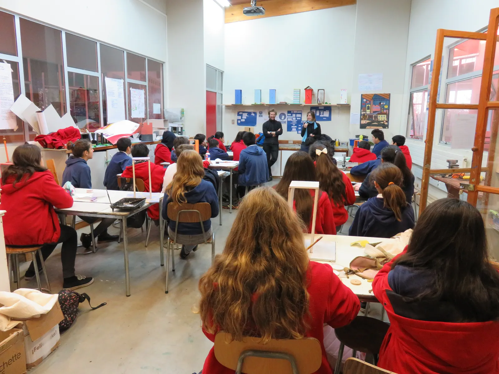
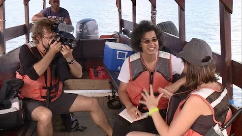
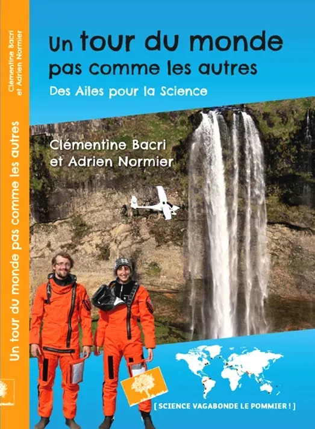

Notre mission — 03
Une aventure au service de l'éducation
Rencontrer, partager, éduquer — auprès des jeunes et du grand public.
Rencontrer, partager, éduquer — auprès des jeunes et du grand public.
Cette folle aventure et la variété des collaborations scientifiques sont un matériau fantastique pour comprendre les enjeux liés à la science et à l'environnement ! Nous rencontrons des élèves et leurs enseignants, mais aussi des citoyens, afin de partager notre expérience.



Interventions dans les écoles, universités et auprès du grand public.
Explorer →
Web-séries et longs métrages documentaires sur nos expéditions.
Explorer →
Deux livres d'aventures scientifiques pour le grand public.
Explorer →